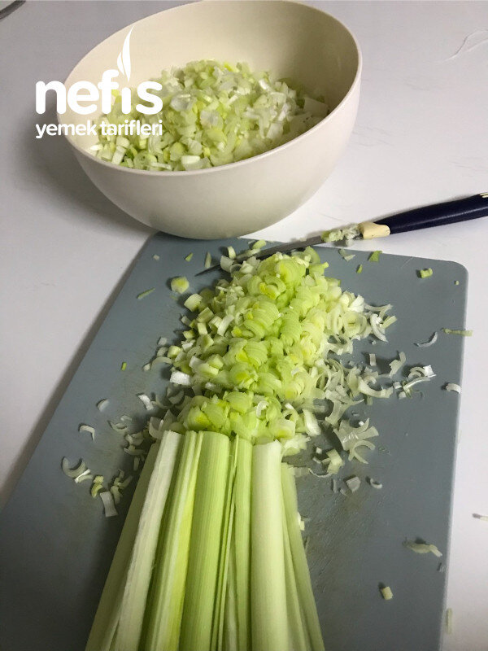

🍽️ 8-10 kişilik⏱️ Hazırlık: 40 dk🔥 Pişirme: 30 dk🏷️ Hamur İşi Tarifleri🏷️ Börek Tarifleri
Malzemeler
- 2,5 bardak su
- 1,5 kaşık tuz
- Alabildiği kadar un
- Bezeleri açmak için de un
- 3-4 kalın pırasa
- Tuz ( pırasa için)
- 1 kase zeytinyağı veya sıvı yağ
Hazırlanışı
- Pırasayı dörde veya altıya bölerek ince ince doğrayın hazır olsun.
- Sonra hamuru hazırlayalım. Una tuz ilave ederek 2, 5 bardak biraz ılık suyla hamuru yoğuralım.
- İyice yoğrulmuş hamuru 40 parçaya bölelim, mandalina büyüklüğü gibi.
- Yuvarlayalım.
- 10 dakika kadar dinlendirip, küçük pasta tabağı kadar, 16-18 cm çapında kadar açalım.
- 20 tanesi alt katı olacak böreğimizin.
- Bütün hamurları açtıktan sonra aralarını 1 kaşık kadar yağ ile yağlayarak( yağ az olursa tel tel olmaz) 20 li iki gurup hamurumuz olacak.
- Biraz dinlenirse bu şekilde hamuru büyütmemiz kolaylaşır.
- Sonra kenarlarından önce ellerimizle, sonra biraz da oklava yardımıyla tepsi büyüklüğünden birkaç cm fazla açıyoruz. Fırın kağıdı kullanmıyorsanız yağlanmış tepsiye hamurumuzu koyuyoruz. Tepsinin kenarları margarinle yağlanırsa hamur kaymaz daha rahat olur.
- Diğer hamur da aynı büyüklükte hazırlanır.
- Tepsideki hamurun üzerine, son anda tuzlayıp yağladığımız pırasalar yayılır.
- Pırasaların üzerine diğer hamur konur.
- Kenarları alt hamurla üst hamur birleştirilerek incecik kıvrılır.
- Üzeri sıvı yağ ile yağlanarak 200 derecede üzeri kızarıncaya kadar pişirilir. Afiyet olsun😊.